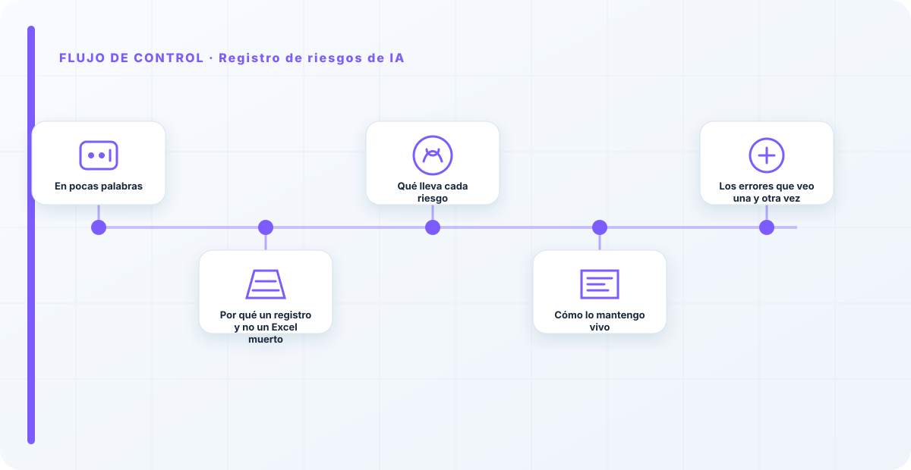
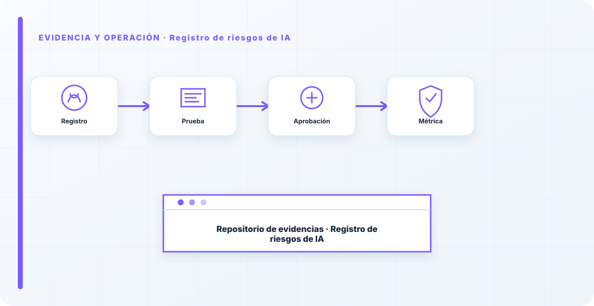

En pocas palabras
El registro de riesgos de IA es el sitio donde todo lo que da miedo deja de ser una sensación difusa y pasa a ser una lista concreta con dueño, probabilidad, impacto y plan. Sin él, el riesgo vive en conversaciones de pasillo y correos sueltos, y por tanto no se gestiona: se olvida. Con él, se prioriza y se trata. Pero hay una trampa que tengo que avisarte desde el principio: la mayoría de los registros que me encuentro están muertos —un Excel que se rellenó para una auditoría y no se ha vuelto a tocar—. Y un registro que no se actualiza es peor que no tener registro, porque da una falsa sensación de control.
Por qué un registro y no un Excel muerto
La diferencia entre un registro vivo y uno muerto no es el formato ni la herramienta, es el uso. Un registro vivo es el que mira el comité en cada reunión, el que cambia cuando cambia un sistema, el que dispara acciones concretas. Un registro muerto es una foto de un momento que ya pasó, por muy bonita que sea. He visto registros preciosos con cincuenta riesgos perfectamente redactados que no habían movido una sola decisión en un año entero. Eso no es gestión de riesgo; es documentación de riesgo.
Prefiero, sin dudarlo, cinco riesgos que se revisan de verdad a cincuenta que decoran una carpeta. La cantidad impresiona en una auditoría superficial, pero lo que protege a la organización es que los riesgos que importan estén vivos, tengan dueño y se muevan. Un registro se mide por su actividad, no por su longitud.
Qué lleva cada riesgo
Cada entrada tiene que responder, de un vistazo, a lo esencial: qué puede pasar, qué probabilidad tiene, qué impacto tendría, quién es su dueño y qué estamos haciendo al respecto. La combinación de probabilidad e impacto es la que me dice dónde mirar primero, y por eso la represento en una matriz:
La matriz no es para adornar el informe: es para priorizar de verdad. Un riesgo con impacto muy alto y probabilidad media exige atención ya; uno de impacto bajo y probabilidad baja puede esperar o aceptarse conscientemente. Y cada riesgo tiene un tratamiento explícito —mitigar, transferir, evitar o aceptar—, pero aceptar siempre con una firma detrás, no por olvido. La diferencia entre "aceptamos este riesgo" y "se nos pasó" es toda la diferencia del mundo cuando algo sale mal.

Cómo lo mantengo vivo
Un registro vivo necesita rutina, no heroísmo. Se revisa en cada comité, se actualiza cuando un sistema cambia o aparece uno nuevo, y cada riesgo aceptado lleva una fecha de revisión para que no se quede aceptado eternamente sin que nadie lo mire. Lo conecto con la evaluación de impacto —que es de donde salen muchos de los riesgos— y con el comité, que es quien decide sobre ellos.
Esa conexión es lo que lo mantiene respirando: si el registro no está enganchado a un sitio de donde entran riesgos (la evaluación) y a un sitio donde se deciden (el comité), se seca en semanas. Un registro aislado, que solo actualiza una persona cuando se acuerda, tiene los días contados.
El número de riesgos en tu registro no dice nada de lo bien que gestionas; dice cuánto has escrito. Lo que de verdad importa es cuántos han cambiado de estado en el último trimestre. Un registro donde nada se mueve no significa que no tengas riesgos: significa que no los estás mirando. La actividad del registro es el pulso de tu gestión de riesgo; si está plano, hay que preocuparse, no relajarse.
Los errores que veo una y otra vez
- El registro muerto: se rellena una vez y no se toca.
- Riesgos sin dueño, que en la práctica no gestiona nadie.
- Aceptar riesgos por olvido en vez de por decisión con firma.
- Redactar mucho y priorizar poco: cincuenta riesgos y ninguna acción.
- Desconectarlo del comité y de la evaluación de impacto, y que se seque.
- Confundir la longitud del registro con la calidad de la gestión.
Cómo lo llevaría a un entorno real
Cuando aterrizo registro de riesgos de ia en una organización, no empiezo por comprar una herramienta ni por redactar veinte páginas. Empiezo por dibujar qué ocurre hoy: quién solicita el cambio, quién lo aprueba, qué sistemas intervienen, qué datos cruzan el proceso y quién se entera cuando algo falla. Ese dibujo suele descubrir más problemas que cualquier checklist. En riesgo y cumplimiento, lo peligroso no es solo carecer de controles; también lo es creer que existen porque alguien los escribió una vez.
Después separo lo imprescindible de lo deseable. Lo imprescindible debe poder comprobarse: un responsable identificado, una regla clara, una evidencia fechada y un mecanismo para reaccionar. En este caso revisaría especialmente Registro, riesgos y responsable. No me vale una respuesta del tipo «lo gestiona el proveedor» o «eso lo mira seguridad». Necesito saber qué persona toma la decisión, con qué información y dentro de qué plazo.
La implantación debe crecer con el riesgo. Un piloto interno puede funcionar con una ficha breve y una revisión manual. Un sistema que afecta a clientes, empleados, dinero o información sensible necesita segregación de funciones, pruebas independientes, monitorización y un expediente mantenido. Mi criterio es sencillo: cuanto más difícil sea deshacer el daño, más fuerte debe ser la barrera antes de producción.
Decisiones que deben quedar por escrito
Hay decisiones que no deberían vivir en una reunión ni en un mensaje de chat. Para registro de riesgos de ia dejaría documentados el alcance, los supuestos, los límites de uso, las excepciones aceptadas y las condiciones que obligan a detener o reevaluar. El documento no tiene que ser enorme, pero sí debe permitir que otra persona entienda por qué se hizo lo que se hizo.
También registraría quién puede cambiar control, quién valida evidencia y quién recibe las alertas relacionadas con Registro. Cuando esas tres responsabilidades se mezclan, aparece el clásico problema: el mismo equipo construye, aprueba y declara que todo funciona. No siempre se puede separar por completo, sobre todo en organizaciones pequeñas, pero al menos debe existir una revisión por alguien que no dependa del éxito inmediato del despliegue.
Las excepciones merecen un tratamiento propio. Una excepción sin fecha de caducidad acaba convirtiéndose en la arquitectura real. Por eso exigiría motivo, riesgo aceptado, responsable, compensaciones, fecha de revisión y criterio de cierre. Si falta uno de esos elementos, no es una excepción gestionada; es una deuda invisible.

Un ejemplo práctico
Imaginemos que un equipo quiere incorporar registro de riesgos de ia a un servicio que ya está en producción. La propuesta promete reducir tiempos y automatizar tareas, pero utiliza componentes que cambian con frecuencia. Antes de aprobarlo, pediría una prueba limitada, un inventario de dependencias, un flujo de datos y una definición clara de qué acciones quedan fuera del alcance.
Durante la prueba recogería resultados normales y casos límite. No solo miraría si funciona; comprobaría qué ocurre cuando faltan datos, cambia una versión, se pierde conectividad, llega una entrada manipulada o un usuario intenta superar sus permisos. Ahí es donde se ve si el diseño aguanta. En muchas pruebas felices todo parece seguro porque nadie ha intentado romper la hipótesis de partida.
Si los resultados son aceptables, la salida a producción tendría condiciones: versión fijada, configuración aprobada, logs disponibles, responsables de guardia, procedimiento de rollback y revisión tras las primeras semanas. Si alguno de esos elementos no existe, prefiero retrasar el despliegue. Un día de demora suele ser más barato que investigar después un comportamiento que nadie puede reconstruir.
Qué evidencias guardaría
Para demostrar que el control funciona conservaría evidencias que cuenten una historia completa, no capturas sueltas. La historia debe enlazar necesidad, decisión, implementación, prueba y operación. En registro de riesgos de ia eso incluye como mínimo la ficha del activo, el diagrama vigente, la configuración aprobada, el resultado de las pruebas y el registro de cambios.
No guardaría información por acumular. Si los logs contienen prompts, documentos, datos personales o secretos, aplicaría minimización, control de acceso y retención. La evidencia debe ayudar a investigar y auditar sin crear una segunda fuga de información. Es frecuente endurecer el sistema principal y dejar un repositorio de evidencias abierto a demasiadas personas.
- Propietario y finalidad de registro de riesgos de ia, con fecha de revisión.
- Inventario de Registro, riesgos y dependencias asociadas.
- Criterios de aceptación y resultados sobre responsable y control.
- Configuración efectiva, versión y aprobación del cambio.
- Alertas, incidentes, excepciones y acciones correctivas cerradas.
Señales de que el control no está funcionando
El primer síntoma es que nadie sabe responder con rapidez quién es el responsable. El segundo es que la documentación describe una versión distinta de la que está operando. El tercero es que las alertas existen, pero llegan a un buzón que nadie revisa. Cuando aparecen esos tres síntomas, el problema no es tecnológico: el control se ha desconectado de la operación.
También desconfío de las métricas demasiado perfectas. Cero incidentes, cero excepciones y cien por cien de cumplimiento pueden significar excelencia, pero con frecuencia significan que no estamos mirando. Prefiero indicadores que enseñen tendencia: tiempo de corrección, antigüedad de excepciones, cobertura de pruebas, cambios sin revisión y reincidencias.
Por último, revisaría el comportamiento después de cada cambio significativo. En IA, una actualización de modelo, dataset, prompt, herramienta, permiso o proveedor puede alterar el riesgo sin cambiar el nombre del servicio. Si el proceso solo reevalúa cuando se crea un proyecto nuevo, se quedará ciego durante la mayor parte de la vida útil.
Mi criterio de cierre
Considero que registro de riesgos de ia está razonablemente controlado cuando el equipo puede explicar el proceso sin depender de una sola persona, reconstruir una decisión con evidencias y detener el servicio sin improvisar. No busco perfección documental; busco que la organización pueda tomar decisiones repetibles bajo presión.
El cierre no consiste en marcar todas las casillas. Consiste en demostrar que los riesgos relevantes tienen propietario, que los controles se prueban y que las desviaciones producen una acción. Si la evidencia no cambia ninguna decisión, probablemente estamos generando burocracia. Si una decisión importante no deja evidencia, estamos creando fragilidad.
Este enfoque es el que intento mantener en toda CyberLibrary AI: explicar el control de forma que lo entienda negocio, pero con suficiente profundidad para que arquitectura, seguridad, auditoría y operaciones puedan aplicarlo de verdad.
Referencias y marcos relacionados
Contenido educativo y técnico. No sustituye asesoramiento jurídico ni una auditoría formal.